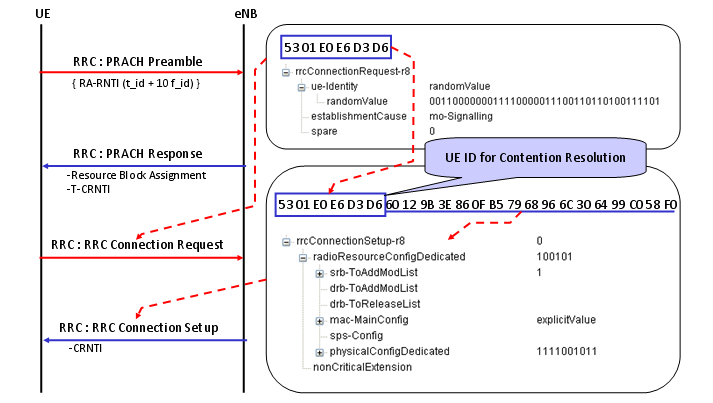
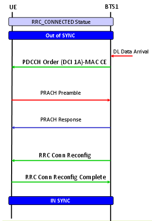
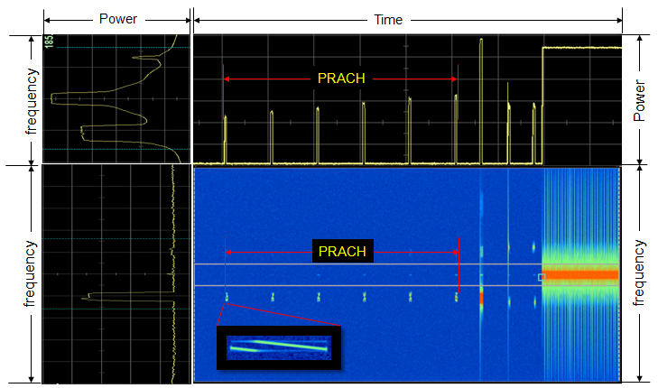

RACH Home : www.sharetechnote.com
What is the most tricky part in device troubleshooting ? My experience says "If a problem happens in the middle of doing something, it is relatively easy to find the root cause and troubleshoot it (probably I might have over-simplified the situation -:), but if something happened before anything started, it would be a nightmare." For example, you set the all the parameters at thenetwork emulator for a UE you want to test and then turned on the UE. In a several second UE start booting and then in a couple of second you see a couple of antenna bars somewhere at the top of UE screen.. and then in several seconds you see 'SOS' or 'Service Not Available' in stead of your network operator name displayed on your screen and normal Antenna bars. This is what I mean by "problem in the middle of doing something". In this case, if you collect UE log and equipment log, at least you can easily pin point out the location the problem happens and start from there for further details. But what if you are in this situation ? you set the all the parameters at the network emulator side and turn on the UE.. UE start booting up .. showing the message saying "Searching Network ...." and got stuck there.. with no Antenna bars .. not even 'SOS' .. just saying "No service". And I collected UE side log and Network Emulator side log, but no signalling message. This is where our headache starts.
As examples,
i) What if you don't see 'RRC Connection Request' when your turned on the WCDMA UE ?
ii) What if you don't see 'Channel Request' when your turned on the GSM UE ?
iii) What if you don't see 'RACH Preamble' when your turned on the LTE UE ?
First thing you have to do is to understand the every details of this procedure not only in the higher signaling layer, but also all the way down to the physical layers related to these first step. And also you have to use proper equipment which can show these detailed process. If you have an equipment that does not provide the logging or it provides log but only higher layer singnaling log, it will be extremly difficult to troubleshoot. Given that you have the proper tools, the next thing you have to be ready is to understand the detailed knowledge of these process. Without the knowledge, however good tools I have it doesn't mean anything to me. So ? I want to teach myself here about the first step of LTE signaling which is RACH process. (Somebody would say there are many of other steps even before the RACH, like frequency Sync, Time Sync, MIB/SIB decoding.. but it put these aside for now.. since it is more like baseband processing).
- When RACH Process occurs ?
- Two types of RACH process : Contention-based and Contention-free
- Exactly when and Where a UE transmit RACH ?
- What is preamble format ?
- How does Network knows exactly when UE will transmit the RACH ?
- PRACH Preamble Signal Structure
- How to generate RACH Signal ?
- Exactly when and where Network transmit RACH Response
- PRACH Parameters and it's Physical Meaning
- RACH Procedure during Initial Registration - RACH Procedure Summary
- How can we get RA RNTI ?
- An Example of Full RACH Process
- PRACH Retransmission
- RACH Process Overview In Diagrams
- RACH Procedure on Initial Registration
- RACH Procedure on Handover - Contention Based
- RACH Procedure on Handover - NonContention Based
- RACH Procedure on DL Data Arrival when Out-of-Sync - Non Contention Based
- RACH Procedure on DL Data Arrival when Out-of-Sync - Contention Based
- RACH Procedure on UL Data Arrival when Out-of-Sync
- RACH Procedure on RRC Connection Re-establishment when Out-of-Sync
- PRACH RF Snapshot
- 3GPP Standard for RACH Process
It would be helpful to understand if you think about when 'RRC Connection' happens (or when PRACH process happens if you are interested in lower layer stuffs) in WCDMA. It would also be helpful if you think about when 'Channel Request' happens in GSM UE.
My impression of LTE RACH process is like the combination of PRACH process (WCDMA) and Channel Request (GSM). It may not be 100% correct analogy.. but anyway I got this kind of impression. In LTE, RACH process happens in following situation (3GPP specification, 10.1.5 Random Access Procedure of 36.300 )
i) Initial access from RRC_IDLE
ii) RRC Connection Re-establishment procedure
iii) Handover
iv) DL data arrival during RRC_CONNECTED requiring random access procedure
E.g. when UL synchronisation status is “non-synchronised”
v) UL data arrival during RRC_CONNECTED requiring random access procedure
E.g. when UL synchronisation status is "non-synchronised" or there are no PUCCH resources for SR available.
vi) For positioning purpose during RRC_CONNECTED requiring random access procedure;
E.g. when timing advance is needed for UE positioning
Two types of RACH process : Contention-based and Contention-free
When a UE transmit a PRACH Preamble, it transmits with a specific pattern and this specific pattern is called a "Signature". In each LTE cell, total 64 preamble signatures are available and UE select randomly one of these signatures.
UE select "Randomly" one of these signatures ?
Does this mean that there is some possibility that multiple UEs send PRACH with identical signatures ?
Yes.
There is such a possibility. It means the same PRACH preamble from multipe UE reaches the NW at the same time.. this kind of PRACH collision is called "Contention" and the RACH process that allows this type of "Contention" is called "Contention based" RACH Process. In this kind of contention based RACH process, Network would go through additional process at later step to resolve these contention and this process is called "Contention Resolution" step.
But there is some cases that these kind of contention is not acceptable due to some reason (e.g, timing restriction) and these contention can be prevented. Usually in this case, the Network informs each of the UE of exactly when and which preamble signature it has to use. Of course, in this case Network will allocate these preamble signature so that it would not collide. This kind of RACH process is called "Contention Free" RACH procedure. To initiate the "Contention Free" RACH process, UE should be in Connected Mode before the RACH process as in Handover case.
Typical 'Contention Based' RACH Procedure is as follows :
i) UE --> NW : RACH Preamble (RA-RNTI, indication for L2/L3 message size)
ii) UE <-- NW : Random Access Response (Timing Advance, T_C-RNTI, UL grant for L2/L3 message)
iii) UE --> NW : L2/L3 message iv) Message for early contention resolution
Now let's assume that a contention happened at step i). For example, two UEs sent PRACH. In this case, both of the UE will recieve the same T_C-RNTI and resource allocation at step ii). And as a result, both UE would send L2/L3 message through the same resource allocation(meaning with the same time/frequency location) to NW at step iii). What would happen when both UE transmit the exact same information on the exact same time/frequency location ? One possibility is that these two signal act as interference to each other and NW decode neither of them. In this case, none of the UE would have any response (HARQ ACK) from NW and they all think that RACH process has failed and go back to step i). The other possibility would be that NW could successfully decode the message from only one UE and failed to decode it from the other UE. In this case, the UE with the successful L2/L3 decoding on NW side will get the HARQ ACK from Network. This HARQ ACK process for step iii) message is called "contention resolution" process.
Typical 'Contention Free' RACH Procedure is as follows :
i) UE <--NW : RACH Preamble Assignment
ii) UE --> NW : RACH Preamble (RA-RNTI, indication for L2/L3 message size)
iii) UE <--NW : Random Access Response (Timing Advance, C-RNTI, UL grant for L2/L3 message)
Exactly when and Where a UE transmit RACH ?
To answer to this question, you need to refer to 3GPP specification TS36.211 - Table 5.7.1-2.
Did you open the specification now ? It shows exactly when a UE is supposed to send RACH depending on a parameter called "PRACH Configuration Index".
For example, if the UE is using "PRACH Configuration Idex 0", it should transmit the RACH only in EVEN number SFN(System Frame Number). Is this good enough answer ? Does this mean that this UE can transmit the RACH in any time within the specified the SFN ? The answer to this question is in "Sub Frame Number" colulmn of the table. It says "1" for "PRACH Configuration Idex 0". It means the UE is allowed to transmit RACH only at sub frame number 1 of every even SFN.
Checking your understanding of the table, I will give you one question. With which "PRACH Configuration Idex", it would be the easiest for the Network to detect the RACH from UE ? and Why ?
The answer would be 14, because UE can send the RACH in any SFN and any slots within the frame.
In a big picture, you should know all the dimmensions in the following diagram. (The Red rectangle is PRACH signal).
The R_Slot is determined by PRACH Configuration Index and R_length is determined by Premable format. F_offset is dermined by the following equation when the preamble format is 0~3. n_RA_PRBoffset in this equation is specified by prach-FreqOffset in SIB2.
If you see the table 5.7.1-1 show above, you see the column titled as "Preamble Format". What is the preamble format ? It is defined as following diagram.
You would see that the length of PRACH preamble varies depending on the preamble format. For example, the length of PRACH with preamble format is (3186 + 24567) Samples. (As you know, one sample (Ts) is 1/30.72 us. It is defined as 1/(15000 x 2048) seconds in 36.211 4 Frame structure).
You may ask "Why we need this kind of multiple preamble format ?", especially "Why we need various PRACH format with different length in time ?".
One of the main reason would be that they use different preamble format depending on cell radius, but this is oversimplified answer.
I want to recommend a book titled "LTE : The UMTS From Theory to Practice" Section 19.4.2 The PRACH Structure. This is the material that describes the PRACH in the most detailed level I have ever read.
How does Network knows exactly when UE will transmit the RACH ?
It is simple. Network knows when UE will send the RACH even before UE sends it because Network tells UE when the UE is supposed to transmit the RACH. (If UE fails to decode properly the network information about the RACH, Network will fail to detect it even though UE sends RACH).
Following section will describe network informaton on RACH.
Which RRC Message contains RACH Configuration ?
It is in SIB2 and you can find the details in 3GPP 36.331.
numberOfRA-Preambles : There are total 64 RA preambles that UE can randomly choose from. But usually a cell reserve several Preambles for 'Non-contention based' PRACH procedure and let UE use the rest of Preambles randomly (contention based). numberOfRA-Preambles indicates how many RA preambles (RA sequences) is available for the contention based RACH process.
Following figure shows the PRACH Premable signal structure in comparison with normal Uplink subframe. A couple of points to be specially mentioned are
- Preamble Length in Frequency Domain is amount to 6 RBs of UL Subframe, which is 1.08 Mhz
- One sub carrier of PRACH Preamble is 1.25 Khz whereas 1 sub carrier of UL subframe is 15 Khz. It means that 12 preamble sub carrier is amount to 1 UL Subframe subcarrier.

You don't have to know the details of this procedure unless you are the DSP or FPGA engineer implementing LTE PHY. Just as a common sense about LTE, let's know that PRACH is a kind of ZaddOff Chu Sequence generated by the following equation.
, where u = physical root sequence index
There are 64 preambles available for each cell and UE has to be able to generate the 64 preambles for the cell it want to camp on.
You can easily generate 64 different preambles just by cyclically shifting an existing sequence, but there is a condition for this. All the preamle sequences should be authogonal to each other. Otherwise, various preambles from multiple UEs within the same cell can interfere each other. So we have to shift the generated sequence by a specifically designed value and this value is called Cv (Cyclic Shift Value) and it is defined as follows. (I think determining the Cv is one of the most complicated process in PRACH preamble generation because it gets involved with so many different parameters in cascading manner).
First, you would notice that we use different process to calculate Cv depending on whether we use 'unrestricted sets' or 'restricted sets'. This decision is made by 'Highspeedflag' information elements in SIB2. If Highspeedflag is set to be TRUE, we have to use 'restricted sets' and if Highspeedflag is false, we have to use 'unrestricted sets'.
N_cs is specified by zeroCorrelationZoneConfig information elements in SIB2. As you see in this mapping, N_cs values also gets different depending on whether we use 'restricted sets' or 'unrestricted sets'.
Now let's look at how we get Nzc. This is pretty straightforward. Nzc is determined by the following table.
If the Preamble is using the unrestricted sets, it is pretty simple. You only have to know Nzc, Ncs to figure out Cv.
The problem is when the Preamble is using the 'restricted sets'. As you see the equation above, you need to know the following 4 values to figure out Cv in 'restricted sets'.
The problem is that the calculation of these four variable is very complicated as shown below.
You would noticed that you need another value to calculate to determine which of the three case we have to use. It is du. So we need another process to determine du.
We went through a complicated procedure just to determin one number (Cv). Once we get Cv, we can generate multiple preambles using the following function.
Anyway, now we got a PRACH Preamble sequence in hand, but this is not all. In order to transmit this data. We have to convert this data into a time domain sequence and this conversion is done by the following process.
For the whole PRACH generation procedure, please refer to 5.7.2/5.7.3 of TS 36.211.
Exactly when and where Network transmit RACH Response
We all knows that Network should transmit RACH Response after it recieved RACH Preamble from UE, but do we know exactly when, in exactly which subframe, the network should transmit the RACH Response ? The following is what 3GPP 36.321 (section 5.1.4) describes.
Once the Random Access Preamble is transmitted and regardless of the possible occurrence of a measurement gap, the UE shall monitor the PDCCH for Random Access Response(s) identified by the RA-RNTI defined below, in the RA Response window which starts at the subframe that contains the end of the preamble transmission [7] plus three subframes and has length ra-ResponseWindowSize subframes.
It means the earliest time when the network can transmit the RACH response is 3 subframe later from the end of RACH Preamble. Then what is the latest time when the network can transmit it ? It is determined by ra-ResponseWindowSize. This window size can be the number between 0 and 10 in the unit of subframes. This means that the maximum time difference between the end of RACH preamble and RACH Response is only 12 subframes (12 ms) which is pretty tight timing requirement.
PRACH Parameters and Physical Meaning
< prach-ConfigIndex >
< zeroCorrelationZoneConfig and Highspeedflag >
< prach-FreqOffset >
< rootSequenceIndex >
RACH Procedure during Initial Registration - RACH Procedure Summary
Follwing is an example of RACH procedure which happens during the initiail registration. If you will be an engineer who is working on protocol stack development or test case development, you should be very familiar with all the details of this process.
Again, we have to know every details of every step without missing anything to be a developer, but of course it is not easy to understand everything at a single shot. So, let's start with something the most important part, which I think is the details of RACH response. Following diagram shows one example of RACH Response with 5 Mhz bandwidth. We don't have to memorize the detailed value itself but should be familiar with the data format and understand which part of this bit string means what.
If you decode UL Grant part, you will get the following result. You will notice that the information it carries would be very similar to DCI format 0 which carries Resource Allocation for uplink data. This information in UL Grant in RACH Response message is the resource allocation for msg3 (e.g, RRC Connection Request). Note : This is example of RAR for System BW 5 Mhz. If the sytem BW gets different, you should have different RIV values (if you want to have the same Start_RB, N_RB as in this example) or you will have different Start_RB, N_RB (if you keep RIV as below and just change the system BW)

Let me describe this procedure in verbal form again.
i) UE initiate a Random Access Procedure on the (uplink) Random Access Channel (RACH).(The location of RACH in the frequency/time resource grid the RACH is known to the mobile via the (downlink) Broadcast Channel (BCH). The random access message itself only consists of 6 bits and the main content is a random 5 bit identity)
ii) Network sends a Random Access Response Message(RARM) at a time and location on the Physical Downlink Shared Channel (PDSCH) (The time and location of RARM on PDSCH can be calculated from the time and location the random access message was sent. This message contains the random identity sent by the device, a Cell Radio Network Temporary ID (T_C-RNTI) which will be used for all further bandwidth assignments, and an initial uplink bandwidth assignment)
iii) The mobile device then uses the bandwidth assignment to send a short (around 80 bits) RRC Connection Request message which includes it's identity which has previously been assigned to it by the core network
Only the step i) uses physical-layer processing specifically designed for random access. The remaining steps utilizes the same physical layer processing as used for normal uplink and downlink data transmission
“5.1.4 Random Access Response reception" in "TS36.321” says how to calculate RA_RNTI as follows.
The RA-RNTI associated with the PRACH in which the Random Access Preamble is transmitted, is computed as:
RA-RNTI = 1 + t_id + 10 * f_id
Where t_id is the index of the first subframe of the specified PRACH (0 <≤ t_id <10), and f_id is the index of the specified PRACH within that subframe, in ascending order of frequency domain (0≤ f_id< 6).
For FDD, f_id is fixed as 0.
Therefore, RA_RNTI is decided by the sending timing (SubFrame) of PRACH Preamble by UE. It means that (the subframe number (number between 0000~0009) of PRACH transmission + 1) is RA-RNTI.
It means that UE specifies RA_RNTI by the sending timing (SubFrame) of PRACH Preamble.
An Example of Full RACH Process
Following is an example of Full RACH process with a commercialized LTE device and LTE Network Emulator. I would not explain anything in detail. Just check if the following diagram make any sense to you. If it does, I would say you understand all the details that I explained above.


Most part of previous section was about the ideal RACH process, which means that UE send PRACH and Network send RACH Response at the first trial and went through all the way to the end of process at the first trial.
What if UE does not receive RACH Response at the first trial ? What is UE supposed to do in this case ?
The answer is simple. Just retry (resend) PRACH.
Then you would have more question. ("I" in the following description is "UE")
i) When do I have to retry ? (What should be the time delay between the previous transmission and the next transmission ?)
ii) Do I have to retransmit the PRACH with the same power as previous one ? Or try with a little bit higher power ? If I have to try with a little bit higher power, how much power do I have to increase ?
iii) If I keep failing to receive RACH response, how many time I have to retry ? Do I have to retry until the battery runs out ? or retry only several times and give up ? If I have to give up after a certain amount of retry, exactly how many times do I have to retry ?
The answers to all of these questions are provided by the network.
The answer (instruction) to question i) is provided by Network via a special RAR MAC PDU called "Backoff Indicator". (I will explain about Backoff Indicator later in more detail).
The answer to question ii) and iii) are provided by Network via SIB2 as follows. powerRampingStep is the answer to question ii) and preambleTransMax is the answer to question iii).
In the following example, powerRampingStep = dB2. It means UE has to increase PRACH power by 2 dB everytime it retries.
preambleTransMax = n6. It means UE retries PRACH retransmit only 6 times and then give up.
| +-radioResourceConfigCommon ::= SEQUENCE
| | +-rach-Config ::= SEQUENCE
| | | +-preambleInfo ::= SEQUENCE [0]
| | | | +-numberOfRA-Preambles ::= ENUMERATED [n52]
| | | | +-preamblesGroupAConfig ::= SEQUENCE OPTIONAL:Omit
| | | +-powerRampingParameters ::= SEQUENCE
| | | | +-powerRampingStep ::= ENUMERATED [dB2]
| | | | +-preambleInitialReceivedTargetPower ::= ENUMERATED [dBm-104]
| | | +-ra-SupervisionInfo ::= SEQUENCE
| | | | +-preambleTransMax ::= ENUMERATED [n6]
| | | | +-ra-ResponseWindowSize ::= ENUMERATED [sf10]
| | | | +-mac-ContentionResolutionTimer ::= ENUMERATED [sf48]
| | | +-maxHARQ-Msg3Tx ::= INTEGER (1..8) [4]
RACH Process Overview In Diagrams
I have explained long about the RACH process. Now you may ask "What is the trigger that let UE initiate the RACH process ?". You will see various triggers in 3GTS 36.300 (10.1.5) : Overall description of RACH Process.
"Turning on UE" is one of the trigger for sure. And following is another trigger for this process.
< RACH Procedure on Initial Registration >
This is basically the same sequence that I explained in previous sections, but I simplified the diagram in previous sections to let reader focused more on messaging part of RACH procedure. In this diagram, you see some additional steps like HARQ ACK, DCI 0 (UL Grant). This flow is more similar to real live network procedure.
< RACH Procedure on Handover - Contention Based >
< RACH Procedure on Handover - NonContention Based >
<RACH Procedure on DL Data Arrival when Out-of-Sync - Non Contention Based >

<RACH Procedure on DL Data Arrival when Out-of-Sync - Contention Based >
<RACH Procedure on UL Data Arrival when Out-of-Sync >
<RACH Procedure on RRC Connection Re-establishment when Out-of-Sync >

3GPP Standard for RACH Process
3GTS 36.300 (10.1.5) : Overall description of RACH Process. Read this first.
3GTS 36.211 (5.7) : RRC Messages and IE (Information Elements) which are involved in RACH process.
3GTS 36.213 (6) : MAC Layer Procedure related to RACH Process.